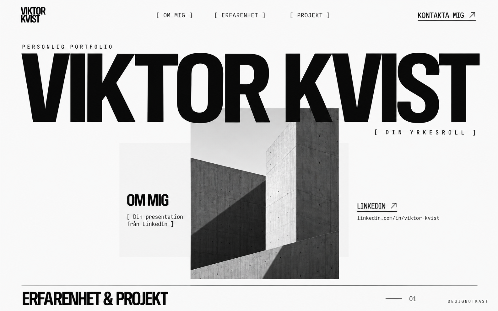

Biblioteksmedarbetare
Biblioteken i Kungsbacka
Organiserade samlingar och gav service och vägledning till besökare, med fokus på noggrannhet och tillgänglighet.
DIGITAL MARKETING / IHM BUSINESS SCHOOL
[ SÖKER LIA VÅREN 2027 ]
Jag pluggar digital marknadsföring på IHM och vill ta det jag lär mig till verkliga uppdrag.
Under min LIA vill jag bidra med idéer, arbeta tillsammans med ett team och utvecklas inom digital marknadsföring.

Kreativt innehåll.
Analys. Nyfikenhet.
[ IHM BUSINESS SCHOOL ]
Augusti 2026 - juni 2028
Medie- och kommunikationsvetenskap
2025 - 2026
Estetik och media
2017 - 2020
Under utbildningen har jag arbetat med praktiska case inom sociala medier, annonsering och SEO, och tagit fram kampanjstrategier i grupp. Jag vill fortsätta utforska samspelet mellan kreativt innehåll och analys: vad får människor att stanna upp, och hur vet vi vad som fungerar?
När LIA:n startar kommer jag att ha avslutat följande kurser:
Windows & macOS
[ KOMMUNIKATION & SERVICE ]
Från klassrum till butik och bibliotek har jag arbetat med människor, anpassat min kommunikation och snabbt satt mig in i nya rutiner. Det tar jag med mig in i digital marknadsföring.
Biblioteken i Kungsbacka
Organiserade samlingar och gav service och vägledning till besökare, med fokus på noggrannhet och tillgänglighet.
Nova Montessoriskola
Planerade och genomförde lektioner med kort varsel. Anpassade undervisning och kommunikation efter olika målgrupper och samarbetade med skolans personal.
Kungsbacka kommun
Anpassade arbetssätt efter barnens behov och satte mig snabbt in i nya arbetsplatser. Samarbetade med kollegor och vårdnadshavare.
Jula
Arbetade med kundservice, rådgivning, varuplock, exponering och lagerhantering tillsammans med butiksteamet.
[ LIA VÅREN 2027 ]
Jag söker en LIA-plats där jag kan använda mina kunskaper, bidra med idéer och fortsätta lära mig. Hör gärna av er.